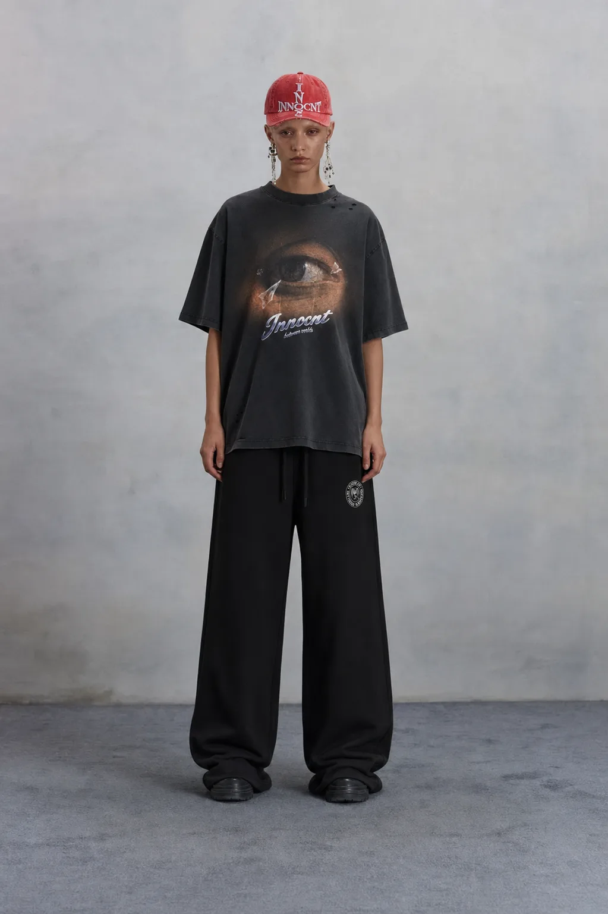

Stay Soft. Know Better.
The missing “e” is a deliberate imperfection: something altered by experience, memory, emotion, and reality.
INNOCNT is for the tender, the strange, and the part of you that refuses to become ordinary. Made for contradiction — funny but not empty, complete enough to wear and incomplete enough to keep asking about.

T-Shirts Hoodies